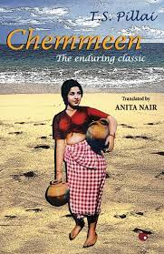
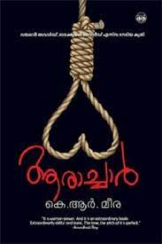
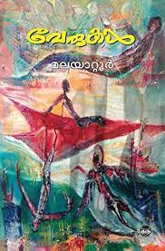
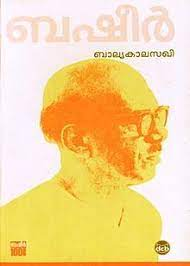

Famous Malayalam Books

Book Name:Chemmeen
Author :thakazhi
Chemmeen tells the story of the relationship between Karuthamma, the daughter of a Hindu fisherman, and Pareekutti, the son of a Muslim fish wholesaler. The theme of the novel is a myth among the fishermen
Read more

Book Name:Arachar
Author :K R Gopinath
Set in Bengal, it tells the story of a family of executioners with a long lineage, beginning in the fourth century BC. The protagonist of the novel, Chetna,
Read more

Book Name:Randam Ozham
Author :M T vasudevan
The novel is a retelling of the Indian epic Mahabharata from the perspective of Bhima, the second Pandava. The story deviates from the traditional Mahabharata story as it avoids the divine elements
Read more

Book Name:verukal
Author :M Ramachandran
The pivotal event on which the novel turns is the return of Raghu to his native village after a lapse of several years, to raise money to build a city mansion for himself by selling his ancestral home.
Read more

Book Name:Balyakalasakhi
Author :Vaikkom
Balyakalasakhi is a Malayalam romantic tragedy novel written by Vaikom Muhammad Basheer. Published in 1944, it is considered by many as Basheer's best work. The story revolves around Majeed and Suhra,
Read more